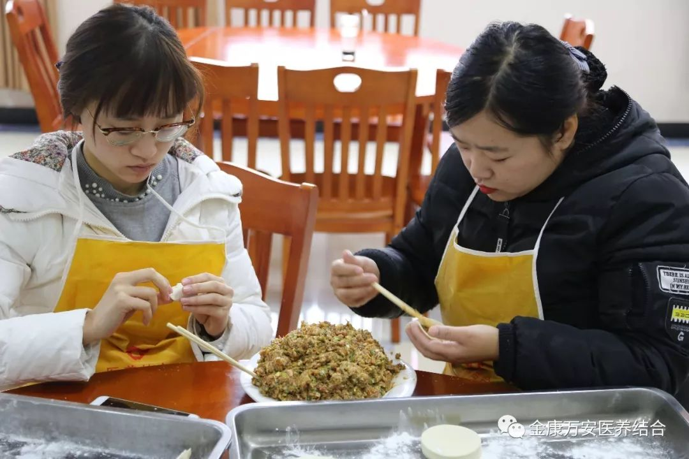

金康万安故事 | 寒冬时节 情暖冬至--金康万安冬至组织员工包饺子
人气: "" 时间：2018-12-22
谚语说得好：冬至到，吃水饺。冬至是中华民族的传统节日，也是中国农历中一项非常重要的节气。中国北方大部分地区在这一天都有吃饺子的习俗。
为了让老人和员工感受到节日的气氛，在冬至这个中华传统节气里感受到家的温暖，加强员工之间的团结与交流，由我院工会组织，12月22日上午09：00在三楼餐厅举行了冬至包饺子活动。
大家在完成自己本职工作之后，志愿报名参加活动的家人们齐聚餐厅，准备大显身手，河南金康万安医疗养老服务有限公司总经理王卫峰、副总经理张莉、副总经理刘洋、业务院长万素华等院领导也相继来到餐厅参与此次活动，在一番准备之后，包饺子活动正式开始。

活动中，大家个个干的不亦乐乎，不一会，一个个奇形怪状的饺子出来了，有圆的、有长的、有包子状的、有元宝状的，千奇百怪，不会包的向会包的学习，渐渐也能熟练地包出来漂亮的饺子，大家都有说有笑，分享交流学习经验，场面十分热闹。





在活动中，大家互相看着身上、脸上沾染的面粉，欣赏着各个"骄傲"挺立着的大馅饺子，每个人脸上都洋溢着灿烂的笑容，现场气氛热烈，不一会儿精巧的爱心饺子就摆满了托盘。


中午12点，全体老人及员工一边吃着热气腾腾的饺子一边聊着天，气氛异常欢快活跃，为这个寒冷的冬季带来了满满的温情。一盘盘热腾腾的饺子驱散了冬日的严寒，温暖着每一位老人及员工的心，大家都说，今年的饺子，真香。


“热乎的饺子，热乎的心”，温馨祥和的气氛，营造了浓浓的家的味道，一份普普通通的饺子，却让老人和员工们感受到了“家”的温暖，将金康万安领导的关怀和温暖传递到大家心中。